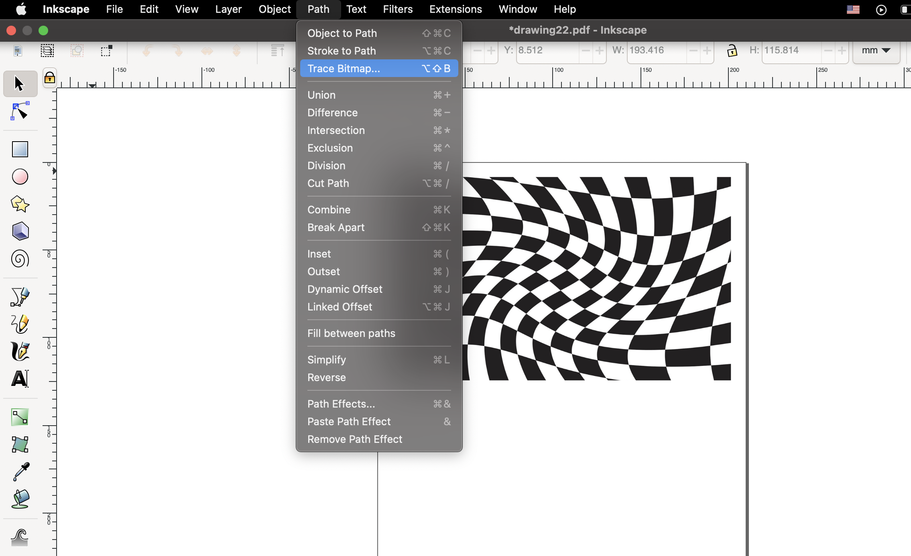
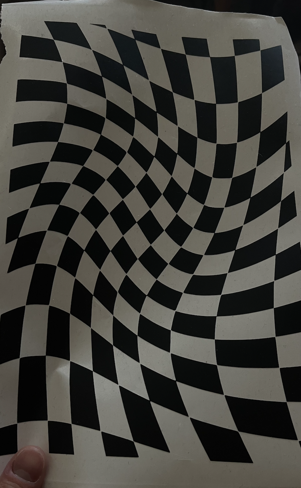
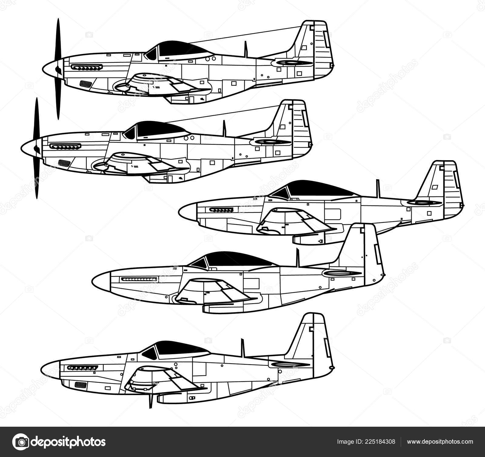
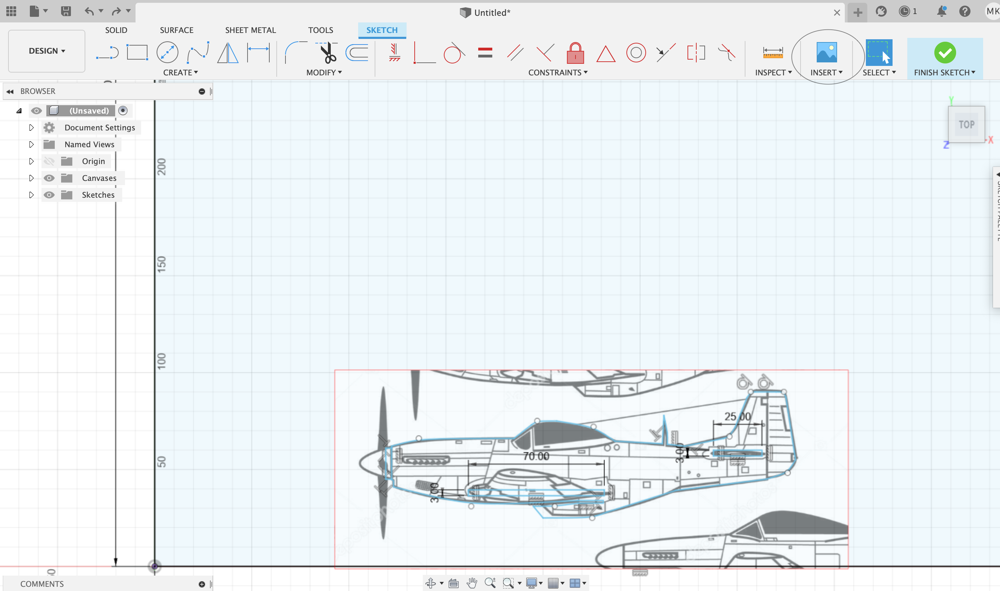
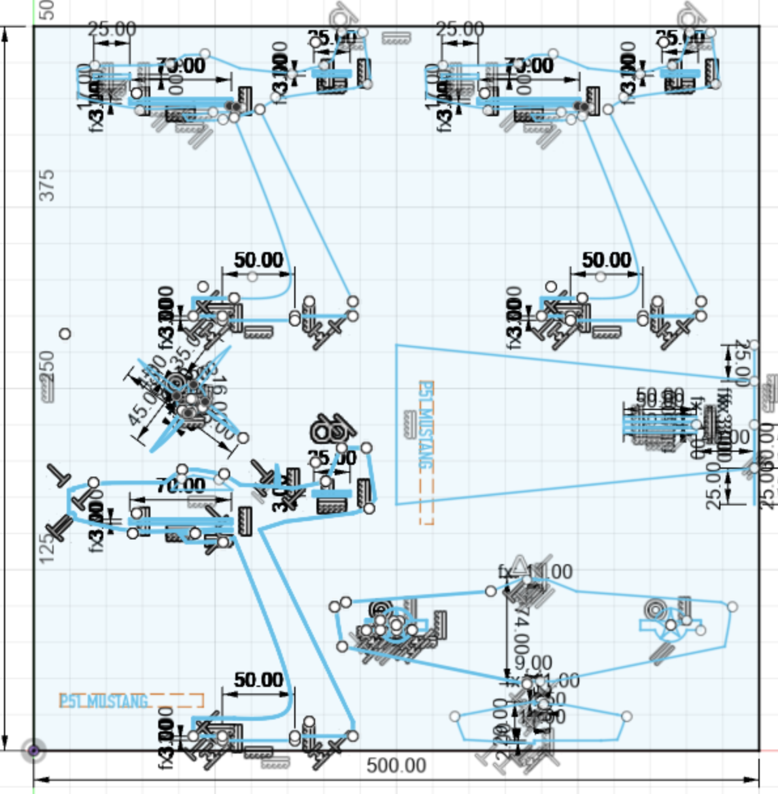
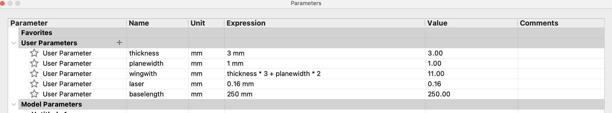

After getting the bitmap. The Orignal image was deleted. Fill was removed and line thicknes was set to 0.02mm before the file was exported as a .pdf and loaded onto the vinyl cutter in the workshop in VR-III. Unfamiliar with the vinylcutter used much help was received from the course teacher to get the printer to the right settings.


Setting the printer to the edge of the vinyl "enter" was pressed and off it wenr. Here are the final results.

The vinyl cutter used in our case was the "Roland camm 1"

The user manual can be found here
Part 2: The lazer cutter.
For my lazer cutter/ pressfit projet i decided to do a model of one of my favorite WWII airplanes, the P-51 Mustang
 The project discription called for a parametric design that could be used and scaled for different materials.
The project discription called for a parametric design that could be used and scaled for different materials.
Getting started designing the P-51 and its platform i used a reference picture of the P-51 and used "insert->canvas" to get a reference of the plane I could use to more easily copy the shape of the plane and its wings
.


I continued like this, designing the wing and the base. Setting up parameters for the base and the material on the way. The parameters were set so that the width of the wings could be changed so that more layers and a thicker plane could be made, also the thickness could be edited with a parameter in case a different thickness material is being used.

